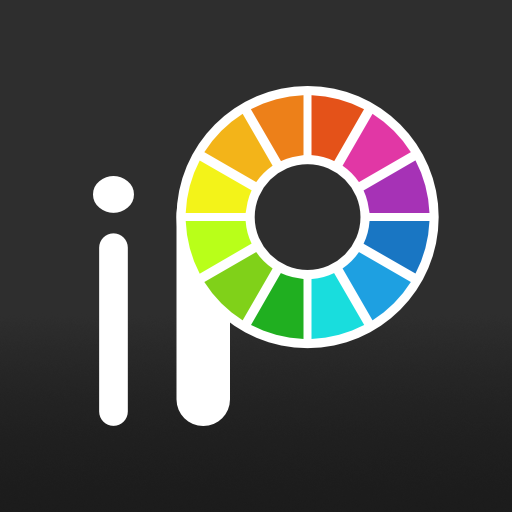
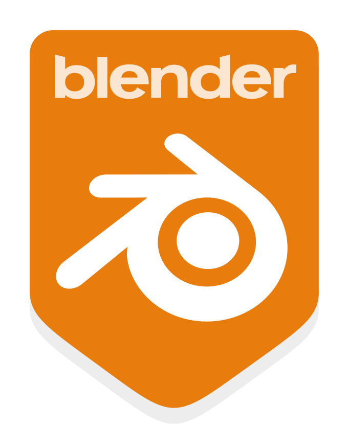
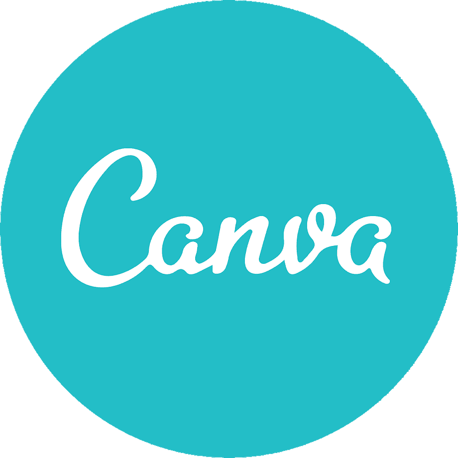
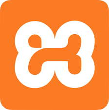
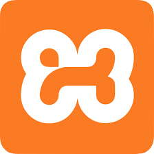
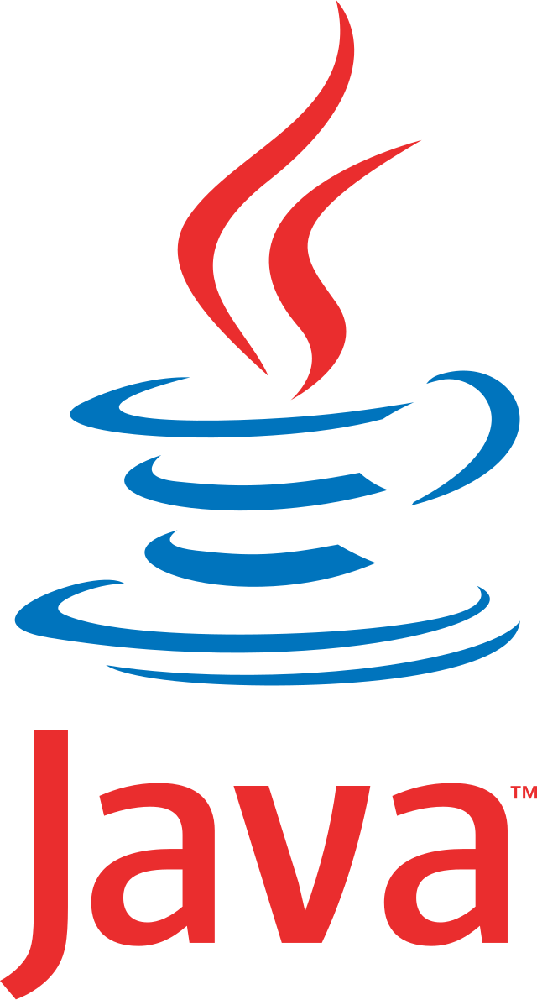
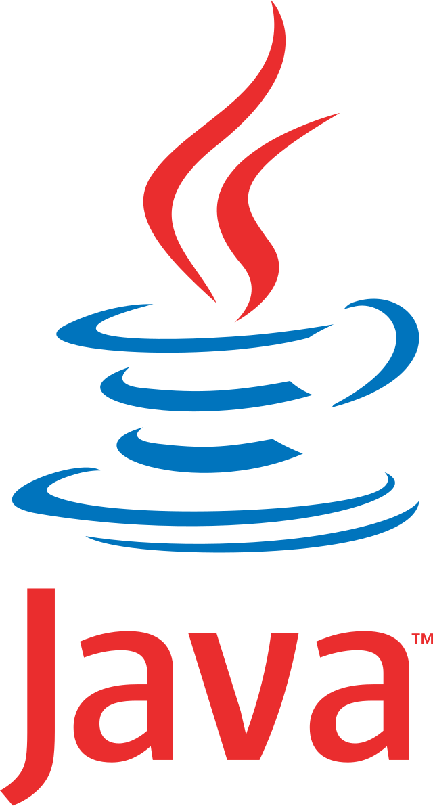
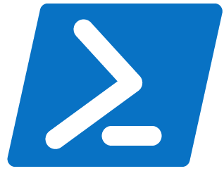
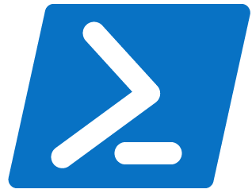

Bonjour à vous, moi c'est Julie !
Je suis actuellement étudiante au lycée Dominique Villars à Gap,
en première année de BTS SIO (services informatiques aux organisations).
J'ai choisie l'option slam (Solutions Logicielles et Application Métier), une option spécialisée pour le développement.
Actuellement toujours en cours d'étude, je vous propose sur ce portfolio de trouver grâce à mon menu les différentes études que j'ai faites, mes projets professionnels que j'ai pu réaliser.
D'observer mes compétences en informatique et en art, vous pouvez également retrouver ma veille informatique sur laquelle je vais travailller pendant deux ans.
Vous trouverez aussi du cotès de l'art, mes inspirations, mes oeuvres et une visualisation de comment je réalise mes oeuvres étapes par étapes.
.Mon curriculum vitae.
Ci-dessous vous trouverez mon curriculum vitae (ou CV). Il récapitule l'ensemble de mes diplômes et compétences acquise au cours de ma vie.
Il y a aussi quelques informations à mon sujet, tels que mes loisirs, mes formations, mes diplôme et mes compétences.
.Centre d'intérêt.
Je passe mon temps libre à dessiner et à apprendre la programation.
Une de mes plus grandes passion est le dessin digital, je dessine principalement avec une tablette graphique relier à mon ordinateur mais je dessine également en traditionnelle (sur papier).
Je pourrais également passer des journées entière à dessiner si j'aurais le choix.
J'adore énormément le graphisme, que ce soit dans les jeux vidéos, les couverture de livre, les animations ou même le dessin en général.
Je vous conseille d'aller voir la partie Art de ce portfolio pour voir mes oeuvres et mes inspirations, si cela vous intéresse.
Les logiciels que j'utilise pour la programation sont assez populaire et connu, beaucoup de grands programmeurs les utilisent.
De Visual Studio Code pour programmer des codes, de Xampp pour héberger des codes php et des bases de données, Inteliji qui lui aussi sert de logiciels de programation.
De Github pouvant servir à héberger votre site web et autres et pour finir du Mysql permettant également de gérer des bases de données.
: Visual Studio code, Xampp, Intelliji, Github et Mysql :
Les logiciels que j'utilise pour le design ne sont pas si populaire que sa.
De IbisPaint pour pleinement dessiner du 2D, de Blender pour réaliser des oeuvres en 3D dépassent l'imagination, de Canva donnent l'opportunité de réaliser des affiches, des pancartes et même des CV.
De Figma pour réaliser des maquettes ou même des pancartes, de Krita permettant également de dessiner librement tout comme Sketchbook.
: Ibis Paint, Blender, Canva, Figma, Krita et Sketchbook :



.Mes langages de programation.
Les langages que j'utilise pour la programation sont assez populaire et connu également, beaucoup de programmeurs les utilisent.
Du HTML (langage de balise) pour écrire des informations dans les pages du site, du CSS pour pouvoir développer le rendu graphique du site ou d'un autre typre de code, du Python pour coder dans l'informatique mathématiquement.
Du PHP pour réaliser des codes pouvant accepter des données et les retranscrire, du java nous permettant de faire plein de choses comme des mini jeux,
du JavaScript pour réaliser des codes plus complexes mais plus performant et pour finir le powershell pour éfféctuer des commandes de codage comme le cmd.
: HTML, CSS, Python, PHP, JAVA, Javascript et Powershell :
 



 

 
